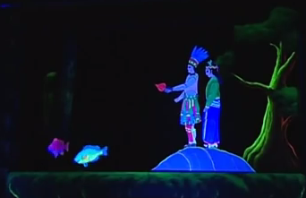

|
|
|
復興閣皮影戲劇團－重視教育意義
劇團原名為「新興皮影戲團」，由張命首先生創立，現任團長為許福助先生。創團至今，獲獎無數，且曾受邀至法國、捷克、德國演出，揚名海外。重視皮影戲劇的教育意義，尤其是傳統的禮教、倫理等。致力於皮影戲的推廣與傳承，最知名的戲劇為《李哪吒鬧東海》。 |
|
永興樂皮影戲劇團－強調傳統精神
張利先生創團於日治時期，早期以地名為團名，之後其子繼承家業，改名為「永興樂皮影劇團」。此團戲偶仍保持傳統特色，古代的婦女影偶的手，用布條代替的方式仍保留不變，強調傳統精神，不可失傳也不輕易改變演出方式。劇團最知名的戲劇為《濟公收黑熊》、《西遊記 - 火燄山》。 |
|
東華皮影戲劇團－傳承創新
張狀先生創立「德興班」，經由歷代團長的經營推廣下，為臺灣最知名的劇團！日治時期在高雄州廳教育局專員支持下，經由比賽成為「第一公奉公團」，演出日語版《西遊記》、《日本桃太郎》等。張德先生更名成「東華皮影戲團」。劇團最知名的戲劇為《延平郡王鄭成功》。團長張榑國先生會依觀賞的對象不同，調整演出的方式，口白內有時還會夾雜一些英文或時下流行語。此劇團不僅重視傳承也重視創新。 |
|
高雄皮影戲劇團－皮偶跳出影窗
劇團原名為「宏興閣皮影戲團」，之後改名為「高雄皮影戲劇團」團長為陳政宏先生，為已故的復興閣皮影戲劇團許福先生的學生。陳政宏先生自從參加皮影戲館所舉辦的社會民眾皮影戲研習班，因此邂逅了皮影戲。此劇團不但保有傳統的皮影戲表演，亦追求創新，製作出能夠開口擺尾的動物皮影戲偶，使戲劇更加活潑生動！且跳脫以往的表演框架，獨創【皮偶跳出影窗】的光影戲，劇團最知名的戲劇為其自創新劇《日月潭傳奇》。 |
| |
|  |
令Jyu印象最深刻的就是高雄皮影戲團，因為他的戲偶是經過改良的，利用螢光漆去上色，團長曾說過：「如果你用創新的思維去製作，其他人會覺得你傳統的技藝沒有學好」這一句話正好點出了傳統保存與創新之間的衝突，如果傳統產業不去改良、創新的話，其實很多東西都會因為高科技的發展而漸漸被淘汰，有了更精緻的電腦3D動畫誰還要來看皮影戲呢?但如果他是以皮影偶加上螢光漆，大家會覺得很酷，皮影戲也會被留存下來，即使它是被改良的，它的本質還是皮影不是嗎？ |
| |
|
| |
|